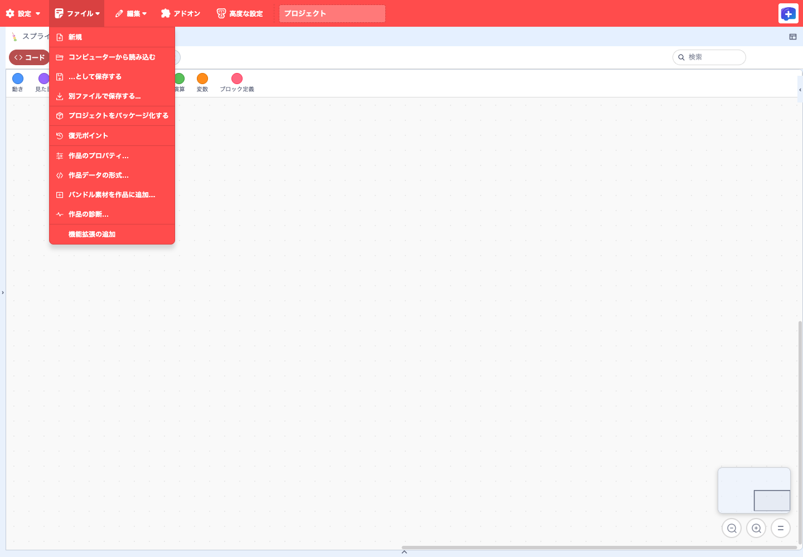
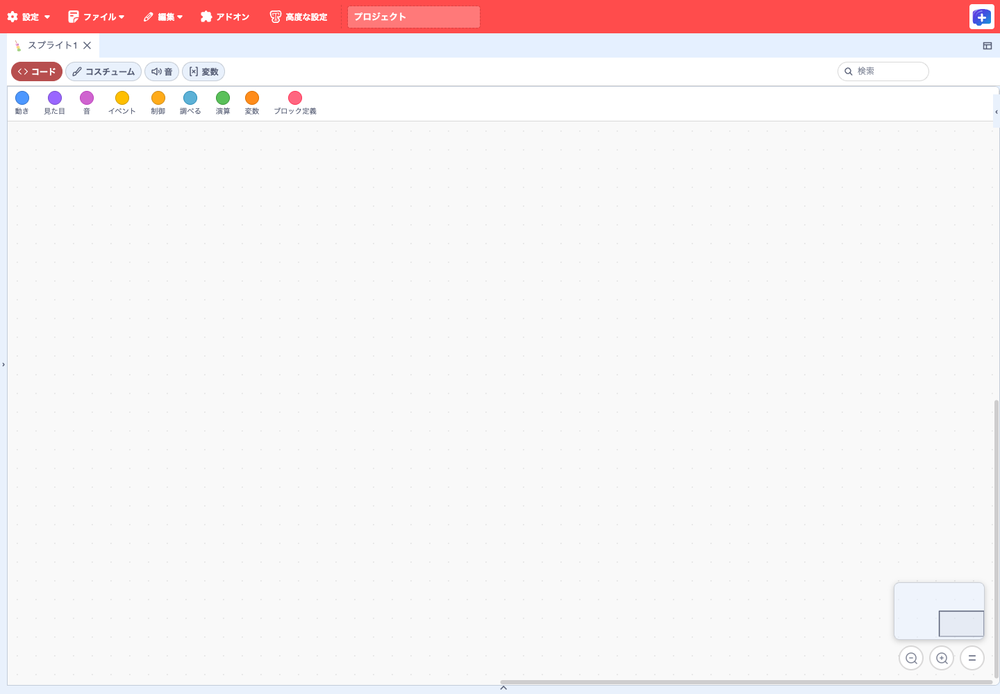
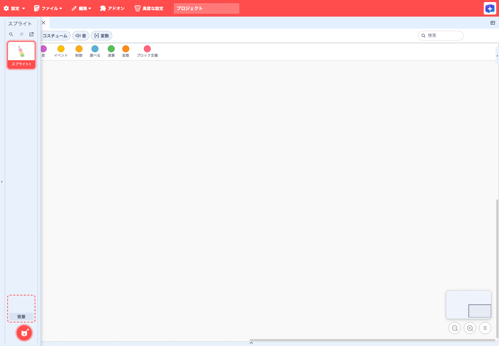
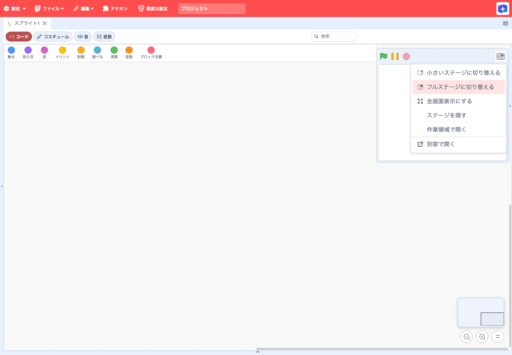
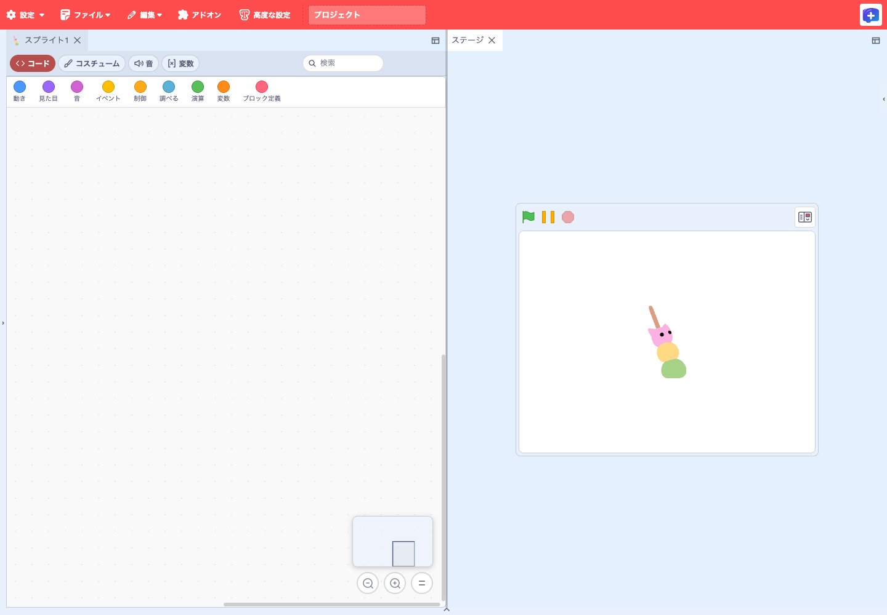
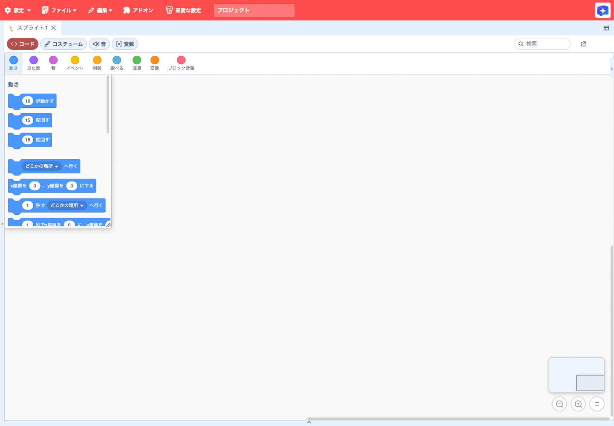

機能ガイド · 2026年11月6日更新
TurboWarp Plusで作品をつくる
作品を開いたら、スプライト、コード、ステージを作業しやすい位置に並べます。編集した内容を確かめ、使い回したい素材を取り込み、SB3や単一HTMLにまとめます。
標準のTurboWarpに加わる機能
| 作業 | 標準のTurboWarp | Plusで加わる操作 |
|---|---|---|
| 作品を開く | SB3の読み込みと拡張の実行確認 | 公式カタログと読み込みの診断 |
| 作業画面を整える | コード・ステージ・スプライトの基本配置 | タブの分割、ステージの別表示、配置復元 |
| 編集する | ブロックの入力欄やメニュー | 横型パレット、ミニマップ、対応するフォームとYAMLタブ |
| 再利用する | バックパックなどで再利用 | バックパックの別表示、スクリプトやステージのファイル転送、バンドル素材の追加 |
| 保存して渡す | SB3の保存と標準Packager | 作品データの格納方式、拡張コードの保存方式、Plus拡張を同梱したHTML |
Web標準 公開Web版の通常起動で使えます。 対応作品・対応拡張 作品や拡張が機能を提供します。 Web試験 起動設定で有効にします。 macOS試験 Desktopのローカル試験ビルドでの検証です。 開発中 対応範囲を検証中です。
作品を用意する
1. sb3-toolchainで作品と拡張を管理する 関連ツール
sb3-toolchain は、SB3を作品データ・素材・組み込み拡張に展開し、Gitで差分を確認してからSB3へ組み直すためのツールです。
- 拡張のメタデータを記録する。 名前や説明に加えて、版、依存する拡張、必要な実行条件を記録できます。展開ソースでは組み込む拡張の取得元・版・SHA-256を管理し、更新時に公開APIの互換性を調べられます。
- 複数の拡張を一つにまとめる。 展開ソースでは個別に管理し、生成するSB3では一つの複合拡張にまとめられます。カタログ外の複合拡張を開く人は、バンドル全体に対して実行許可を判断します。
- 公式カタログの権限を確認する。 Plus EditorはTurboWarp Plusファミリーの公式カタログを使います。掲載された取得元や組み込みコードのSHA-256が条件に合う拡張は信頼済みとして扱い、個別の承認画面を重ねません。
SB3の展開・再生成 · 拡張のバンドル · 公式カタログ
2. 作品を新しく作る・SB3を開く Web標準
日本語でエディターを開くと新しい作品を作れます。続きから始めるには、「ファイル」→「コンピューターから読み込む」で手元のSB3を選びます。編集前に、開いた作品名と選択中のスプライトを確認します。


3. 作品に拡張を追加し、実行条件を確認する Web標準
追加するとき：TurboWarp Plusの一覧
Plus標準配置では「ファイル」→「機能拡張の追加」→「TurboWarp Plus」を開きます。Scratch配置では左下の拡張ボタンから同じ一覧を開けます。必要な拡張をチェックし、読込・保存方法を一括または個別に選んで「追加」を押します。必要な依存拡張も選ばれます。追加画面は通常の起動URLで利用できます。

作品を開くとき：取得元と内容を確認
確認が必要な拡張を含む作品では、実行前に一覧を表示します。Plus形式と通常のカスタム拡張をまとめて確認し、動かすかどうか、サンドボックス内か外かを選びます。作品がサンドボックス外での実行を必要とし、その条件を許可しなければ、その作品は開きません。作者の指定がサンドボックス内なら、外での実行を選んでも内側で動きます。

カタログ掲載の拡張は標準TurboWarpのギャラリーと同様に扱い、追加後に別の承認画面を重ねません。SHA-256は「同じ内容か」を確かめる値で、作者の本人性やコードの安全性を証明する値ではありません。「サンドボックスなし」はエディター側の権限で動くため、内容と提供元を確認して選びます。
取得に失敗したとき
拡張コードの取得が通信の問題で失敗したときは、一覧に「もう一度試す」が出ます。押すと、直前に選んだ読込・保存方法のまま取得し直します。内容のハッシュが合わない、配信元にない（404）、承認しなかった、など繰り返しても結果が変わらない失敗では、理由のコードとメッセージだけを表示し、やり直しは勧めません。
標準の「カスタム拡張機能」は従来どおりの入口です。その画面からのURL追加を、Plusカタログへの登録や4形式の選択と同じ操作とは扱いません。
4. 作品が開けないときに診断を読む Web標準
「ファイル」→「作品の診断…」を開くと、作品を開いた際の結果や、Plus拡張の取得元・実行モード・SHA-256、内容の検証・実行許可・読み込み・再試行・失敗を確認できます。表示するのはLoaderが実際に報告した記録です。作品中のすべてのバグやブロックの正しさを検査する機能ではありません。

- 上部の「読み込みの記録」で、確認したい回を選びます。最新5回を保持し、各回の最新50件のイベントを表示します。
- 拡張やイベントの行を展開し、取得元・検証結果・理由コード・再試行回数などを確認します。失敗した回も、次の作品を開いた後で選べます。
- 「診断をコピー」で、選んだ回の記録をコピーします。クリップボードへ書き込めない環境では、選択してコピーできるテキストを表示します。
- 「閉じる」またはEscapeでEditorへ戻ります。診断を開閉しても作品データは変わりません。
失敗通知から、該当の診断を開く
読み込みに失敗したときは、画面下部の通知の「詳細ログを表示」から、その失敗の診断を開けます。通知だけを閉じても、保持範囲内の診断は残ります。通信が原因で再試行できる場合の操作は、拡張の確認画面や中央の再試行表示で行います。

検証・許可の確認
成功・再試行・失敗
回を選択・詳細・コピー
記録の保持と、実行許可を選ぶ画面との違い
診断はEditorを開いている間のメモリにだけ保持します。ページを再読み込みすると消え、SB3やブラウザーの保存領域には記録しません。コピーには作品名・取得URL・失敗理由などが入るため、問い合わせ等で共有する前に内容を確認してください。
実行許可の選択は、作品を開く際の拡張の確認画面で行います。診断画面には、新たに許可したり取り消したりする操作はありません。SHA-256の一致は内容の一致を示し、作者の本人性やコードの安全性を保証するものではありません。通常のScratch/TurboWarp拡張について、報告されていない個別の検証・許可イベントを追加表示することもありません。
画面を整える
5. Plus標準配置とScratch配置を使い分ける Web標準
公開Web版はPlus標準配置で開きます。左端にスプライト一覧、右端にステージ、下端にバックパックの入口があり、中央の作業領域にコードや素材の編集画面を開きます。Scratch配置で起動するには twPlusStandardLayout=0 を指定して開き直します。


6. 左端からスプライトを探す Web標準
左端の「スプライト一覧を展開」から対象を選びます。「スプライトを検索」で名前からタイルに移動できます。続けて操作したいときはピンで一覧を固定し、区切り線をドラッグして幅を変えます。広げると一覧に表示できる列が増えます。背景タイルを選ぶと背景を編集できます。


7. ステージを展開して作品を動かす Web標準
右端の「ステージを展開」からステージを表示します。緑旗・一時停止・停止で動作を確認し、「ステージの表示」で小さい表示、フルステージ、全画面、非表示を切り替えます。表示を隠しても作品は実行を続けます。


8. 境界を動かして作業領域を調整する Web標準
境界にある3点のグリップをドラッグして隣接する領域の幅や高さを変えます。Plus配置で固定したスプライト一覧の幅を変えるときや、Scratch配置でコード領域とステージ列の幅、ステージと対象一覧の高さを変えるときに使います。Scratch配置では境界にフォーカスを当て、矢印キーでも調整できます。
調整した比率はブラウザー側に保存されます。スプリッターを外して起動するには twPlusSplitter=0 を指定します。 境界のグリップ
9. スプライトごとのタブで作業を切り替える Web標準
Plus標準配置では、スプライトを選ぶとその対象のタブで作業できます。たとえば主人公と相手役のスプライトを開き、上部のタブで往復します。各タブ内で「コード」「コスチューム」「音」「変数」を切り替えます。
10. タブを左右・上下に分割して並べる Web標準
タブ列の「編集パネルのレイアウト」から「パネルを横に分割」または「パネルを縦に分割」を選べます。既存のタブを移すときは、作業領域の端へドラッグし、分割位置を示すハイライトに合わせて離します。別のタブ列へ落とすと同じグループにまとめられます。グループの境界をドラッグして配分を調整し、「編集パネルのレイアウト」から分割パネルを閉じられます。
コードを左、ステージを右に置いたり、設定のYAMLを下に置いたりできます。Plus標準配置の分割ワークスペースはDockviewを使用しています。 分割ワークスペースの既定化
複数の画面で作業する
11. 複数のコード画面を並べて見比べる Web標準
コードのパネルを分割して同じスプライトのコードを並べると、各ペインが横・縦の位置とズーム倍率を保持します。たとえば片方は初期化処理、もう片方はイベント処理に合わせておけます。編集中のブロックは別のペインにも表示されます。別のペインをクリックするかEnterを押して、表示位置を保ったまま編集を移します。
初期化のブロックを表示
ブロックの編集を共有
イベントのブロックを表示
macOS試験 Desktopの試験ビルドでは、同じ対象をOSの別窓で開き、基本的なコード編集やUndo／Redoを共有する経路も検証されています。 Webのコードペイン · Desktopのコード別窓
12. コスチュームや音の選択を保って編集する Web標準
分割したペインごとに、コード・コスチューム・音のどこを開いているか、どの素材を選んでいるかを保持します。たとえば一方で歩くコスチューム、もう一方で止まるコスチュームを選んで比較できます。別のペインで作業した後、元のペインをクリックするかEnterで編集を再開します。
13. 変数を見ながらコードを編集する Web標準
ペインの「変数」タブで値を確認し、編集可能な入力欄から変更できます。コードと変数を分割表示しておけば、処理を見ながらテスト値を変更できます。ペインを切り替えても入力欄の配置を保ち、変更した値は各ペインに反映されます。
14. ステージを作業領域や別窓に移す Web標準
右端からステージを展開し、「ステージの表示」→「作業領域で開く」で、コードと同じタブ領域に置けます。「別窓で開く」を選ぶとブラウザーの別ウィンドウに移ります。どちらも同じ作品のステージです。タブを閉じるかメニューで元の位置に戻せます。
またはブラウザーの別窓


15. パネルの切り離しとドック復帰を試す 環境別
Web試験 スプライト関連パネルの試験機能を有効にすると、スプライト設定や一覧を元の位置から取り外す操作を試せます。切り離した画面の「レイアウト変更」メニューには、表示先・最大化・ドック復帰など、その画面で使える操作が並びます。
macOS試験 ステージ・スプライト設定・一覧のOS別窓とドック復帰は、Desktopのローカル試験ビルドで検証されています。 macOSの試験範囲 · レイアウト変更メニュー · Desktopへの導入状況
16. 次に開くときに作業配置を復元する Web標準
Web版は、タブの順序、分割位置とサイズ、選択状態をブラウザー側に記録します。同じブラウザープロファイルで作品を開くと、読み込み後に現在のスプライトや文書に結び直します。設定を読み取れないときは初期配置で開きます。
作品や未保存の文書は別途保存します。従来の編集レイアウトと文書モーダルを使うには、保存後に twPlusDockview=0 を指定して開き直します。 再起動後の配置復元
ブロックや文書を編集する
17. 横型パレットからブロックを置く Web標準
コード画面上部のカテゴリを押し、直下に開く小窓から目的のブロックをコード領域へドラッグします。標準ブロック、変数、ブロック定義、追加した拡張のカテゴリを同じ流れで使えます。Escapeで小窓を閉じられます。


18. カテゴリの小窓を見やすい大きさにする Web標準
横型パレットの小窓右下をドラッグすると、幅と高さを調整できます。サイズはカテゴリごとに保存されます。画面を狭めると表示できる範囲に収まり、画面を広げると保存したサイズに戻ります。
19. カテゴリの順序を変え、ブロックを整理する Web標準
カテゴリを長押しし、移動先を示す印に合わせて離すと並び替えられます。パレットの外で離すと取り消せます。並び順はレイアウトを切り替えても保持し、ページを再読み込みすると初期順に戻ります。
ブロックをパレットに戻して削除できる位置では、ドラッグ中にゴミ箱が表示されます。右クリックメニューに操作アイコンを出す twPlusContextMenuIcons=1 はWeb試験機能です。 カテゴリの並べ替え · 削除予告 · 右クリックメニューのアイコン
20. ミニマップとズームで長いコードを移動する Web標準
Plus配置ではコード画面右下のズーム操作の上にミニマップがあり、ブロック全体の配置と現在見えている範囲が分かります。離れた場所をクリックして移動するか、表示範囲の枠をドラッグします。下の操作列で縮小、拡大、倍率のリセットができます。

ミニマップを外すには twPlusWorkspaceMinimap=0 を指定します。 ミニマップの操作 · ズームと配置
21. ブロックの値をフォームで編集する 対応拡張
拡張開発者は、ブロックで編集・保存するデータのJSON Schemaを用意し、対象ブロックと引数を指定して登録すると、専用フォームを自動生成できます。 エディターが入力欄を作り、保存前に必須項目や値の範囲を検証します。
たとえば「シーンの名前」「表示時間」「複数の設定」を1つのJSON文字列で持つ拡張では、文字列を手で直す代わりに、項目ごとのフォームを使えます。拡張が編集定義を登録すると、ワークスペースの対応ブロックのアイコンが「ブロックを編集」ボタンになります。

- 対応ブロックをコード領域に置き、ブロックのアイコンを押します。
- フォームで名前や数値を変更します。表示名・色・項目の意味は拡張が定義します。
- 「すべて保存」で下書きをブロックへ反映します。「キャンセル」または閉じる操作では下書きを反映しません。
- 作品ファイルを残すには、その後に通常の「ファイル」からSB3を保存します。

入力の誤りを、その場で見つける
拡張のSchemaや検証処理に従い、必須項目・値の範囲などを確かめます。このサンプルの表示時間は1〜60秒です。0を入力するとエラーを示し、保存できなくなります。検証の内容は各拡張によって異なります。

入れ子・固定入力・Undo
対応する定義があれば、親子のブロックを同じ編集セッションで扱い、数値・文字列・メニューなどの固定入力も専用の欄で編集できます。保存した変更はBlocklyのUndoにまとめられます。定義のないブロックや動的な計算式を、勝手に編集可能なデータへ置き換える機能ではありません。
変更・検証・取消
ブロックへ反映／Undo
SB3を手元へ
拡張作者向けの入口とサンプルはフォーム型ブロックエディターの仕様にあります。
22. 外部YAMLと作品内の文書・ブロックを使い分ける 対応作品
文書を登録する対応拡張では、「データソース」の帽子ブロックのファイルアイコンから文書編集を開けます。提供元が対応する場合、YAML/JSON原文、YAMLブロック、Schema専用ブロックの表現を選び、変換・検証して作品へ反映できます。既存の任意SB3を自動的に文書化する機能ではありません。
通常のEditorで使えます。Plus標準配置では作業領域のタブで開きます。ファイルアイコンが付くのは、対応する拡張（文書の提供元）が文書を登録した帽子ブロックだけです。提供元が参照元を変更可能としている文書では、SB3内のファイルと外部URLの参照元切替も使えます。
ファイルアイコン
提供元が対応する表現
作品の文書へ反映
外部URLはCORSで取得できるHTTPSが必要です。外部内容を編集・ブロック化するには、まずSB3内のファイルへ取り込みます。遠隔サイトへの書き戻しはしません。利用できる変換は各提供元が定義し、対応しない形式を勝手に変換しません。
| 形態 | 文書の置き場所 | 向いている作業 |
|---|---|---|
| 外部YAMLテキスト | HTTPSの配信元。作品には参照先を記録 | 作品と別に管理する台本を読み込む |
| SB3内のYAMLファイル | 原文を作品内のファイルに同梱 | 作品と一緒に渡す。原文を編集する |
| SB3内の汎用YAMLブロック | キー・値・リストを汎用ブロックで表現 | 階層を見ながら、項目や順序を変える |
| SB3内の専用ブロック | 文書のスキーマに沿った専用ブロックで表現 | 場面やせりふなど、作品の用語で編集する |
たとえば外部の台本を取り込むには「取得してプレビュー」の後に「SB3内のファイル」を選びます。そこから汎用・専用ブロックに変換でき、ブロックの編集結果は原文に反映できます。ブロック形式同士を切り替えるときも、原文を経由します。
VSCodeで原文を編集する
GitHub Pagesでは文書の表示・変換・検証を行えます。VSCodeを起動して編集する場合は、Node.jsとVSCodeを入れ、ローカルのコンパニオンからEditorを開きます。「外部エディタで編集」→VSCodeで保存→Editorへ戻って「表示されている形式に変換して検証・保存」→SB3保存、という順です。VSCodeで保存しただけでは作品ファイルは更新されません。
起動コマンドと対応範囲はREADMEの文書編集手順、ウィンドウ操作は文書ウィンドウの仕様を参照してください。従来の文書モーダルで開くには twPlusDockview=0 を指定します。
23. 作品内YAMLをタブに開いてコードと並べる 対応作品
対応作品のデータソースブロックにあるファイルアイコンを押すと、作品内のYAMLがコードやステージと同じ作業領域にタブとして開きます。名前が同じでも提供元と文書が異なれば別のタブとして扱います。タブの移動や分割をしても編集途中の内容を保持します。
未保存のタブを閉じるときは、保存、破棄、キャンセルから選びます。文書の保存を終えたら、ファイルメニューからSB3も保存します。 YAMLタブと草稿の扱い
24. 素材を見たり再生したりして選ぶ 対応拡張で開発中
紙芝居の素材ブロックの編集画面に、画像・音声・動画を確認するプレビューを追加する作業が進んでいます。似た名前の画像を選び直すときや、音を聞き比べるときに使えます。外部素材の取得状況と保持形態も画面で確認できるようにしています。
25. 場面や動作をプレビューしてから反映する 対応拡張
対応する拡張は、フォームの下書きと連動するプレビューや、ステージ周辺の操作ボタン・ドックを登録できます。たとえば作品固有の設定画面や表示状態の確認に使えます。Editorが全ブロック向けのプレビューを自動生成したり、特定のアプリの操作を常に表示したりするわけではありません。
ブロック編集プレビューはフォームと下書きを共有し、作品へ反映する入口はフォームの保存です。プレビュー単独で保存済みデータを変更する扱いにはしません。ステージ操作の内容や保存方針は提供元の拡張が所有します。紙芝居等の作品で現れるリロード表示も、その作品の機能です。
素材とスクリプトを再利用する
26. バックパックを下端から出して再利用する Web標準
Plus配置では、編集画面の下端にポインターを置くとバックパックが展開します。使うスクリプトをコード画面へ移し、ポインターを外すとバックパックは収納されます。置き場所を迷ったときは対象のスプライトを選んでから開きます。
Web試験 試験機能を有効にして開くと、バックパックを切り離し、対応する標準ブロックのスクリプトをコード画面へコピーする経路もあります。macOS試験 Desktop試験ビルドでは背面のコード別窓へのドロップと共有履歴を検証済みです。開発中 別窓間の逆方向、画像・音・スプライトの転送は経路ごとに検証しています。
27. スクリプトとステージを別作品へ転送する Web標準
通常のEditorで、スクリプトの右クリックに書き出し・コピー、コード領域の右クリックに読み込み・貼り付けを追加します。起動設定は不要です。Ctrl/Cmd+C・Vも使えます。

- .blocks3：スクリプトと必要なブロック定義・変数・リスト・メッセージ・拡張参照を移します。OSクリップボードへの許可がなくても、同じサイトのウィンドウ間でコピー・貼り付けできます。
- .stage3：Plus配置では背景タイル、Scratch配置ではステージの右クリックから書き出せます。Scratch配置では背景の「選ぶ」メニューから「ステージを読み込み（追加）」を選びます。背景・音・スクリプトを既存のステージへ追加します。
- 同名の変数等はスコープ・種類が合う既存データを使い、読み込み先の値を保持します。名前が競合する定義やアセットは必要に応じて改名します。式で生成する背景・音の名前や番号までは自動変換しません。
- 転送元の拡張の承認は引き継ぎません。別サイトへのクリップボード転送には対応ブラウザーと読取許可が必要です。同じサイト内の最後のコピーはlocalStorageにも残ります。
URLの設定で無効にすることはできません。詳しくは転送機能の仕様を参照してください。
28. バンドル素材を背景・コスチューム・音に追加する 対応作品
対応するバンドル素材を含む作品で、「ファイル」→「バンドル素材を作品に追加…」を開きます。素材、追加する種類、追加先を選び、「作品に追加」を押します。たとえばバンドル内の画像をステージの背景として再利用できます。元の素材もバンドルに保持されます。
保存して配布する
29. 作品情報を記入してSB3に保存する Web標準
「ファイル」メニューに「作品のプロパティ…」（英語では「Project Properties…」）と「作品の診断…」（「Project Diagnostics…」）があります。通常のEditorで利用でき、URLへの機能設定や追加拡張は必要ありません。
- 「ファイル」→「作品のプロパティ…」を開きます。
- 作品タイトル、複数行の作品概要、作者名、連絡先を入力します。作者名と連絡先は、履歴から選ぶことも新しく入力することもできます。
- 「適用」で現在の作品へ反映します。タイトルはエディター上部と同期します。「キャンセル」または閉じる操作では、作品も入力履歴も変更しません。
- 最後に「ファイル」からSB3を保存します。「適用」だけでは手元の作品ファイルは更新されません。

作者名と連絡先：直近5件から選択、または新規入力
適用した空でない作者名・連絡先を、それぞれ新しい順に5件まで、このブラウザーに記憶します。同じ値を使うと履歴の先頭に移ります。候補を選んでから編集することもできます。今回の作者名と連絡先はSB3へ入りますが、履歴全体は入りません。ブラウザーの保存機能を利用できない場合は、Editorを開いている間だけ記憶します。
連絡先のメールアドレスやmailto:はメール用リンクに、https:はWebリンクになります。メールリンクは利用環境のメールアプリ、Webリンクは別タブで開きます。作品概要はプレーンテキストとして入力し、プレビュー内のHTTPS URLをリンクとして開けます。
日時とSB3への保存
作成日時・最終更新日時は手入力する欄ではありません。新規作品の作成日時は初回の読み込み時に記録し、過去の作品で分からない日時は「未記録」と表示します。最終更新日時は、作品情報やブロックなどを変更して作品ファイルの生成に成功したときに更新します。閲覧や変更なしの再保存では更新しません。ブラウザー外のディスク書き込み完了を示す日時ではありません。
履歴選択・新規入力
現在の作品へ反映
情報・更新日時を記録
タイトル・情報を復元
この情報はPlus独自の作品情報としてSB3に保存します。作者名・連絡先は、SB3を共有すると受け取り手にも表示されます。標準Scratch/TurboWarpや作品情報を無効化したEditorで保存し直すと、独自情報が失われる可能性があるため、元のSB3を保持してください。保存仕様は作品情報と診断の仕様を参照してください。
30. 作品のURIを指定してキャッシュを整理する Web標準
「ファイル」→「作品のプロパティ…」の「作品の URI」に、認証情報やフラグメントを含まないHTTPS URIを入力し、「適用」を押します。次回のSB3保存で作品に記録されます。URIは作品を識別する値で、入力した場所に作品をアップロードする操作はありません。
変更後は新しいURIが拡張コードのキャッシュの書き込み先になります。自動採番やカタログ拡張の共有キャッシュも使われます。 作品URIの指定
31. 拡張コードの保存形式を選ぶ Web標準
「どう実行するか」と「どこからコードを読むか」は別の設定です。Plus形式では、選んだ形式、検証するSHA-256、実行条件をSB3と一緒に保存できます。
| 形式 | 保存するもの・開くときの動作 | 向いている場面 |
|---|---|---|
| remote-non-cacheable | HTTPS URLを記録。開くたびに取得し、ブラウザーにコードのキャッシュを残さない。 | 配信元から毎回取得したい |
| remote-cacheable | URLを記録し、検証済みコードのキャッシュをそのブラウザーに保持してよいと指定。キャッシュはブラウザーのIndexedDBに入り、ページを読み直しても残る。開く人は保持を断れる。 | 再利用のためのキャッシュを許容する |
| embedded-file | コードをSB3内のファイルとして同梱。 | 作品とコードを1ファイルで渡したい |
| embedded-data | コードをdata URLとして作品文書に同梱。標準TurboWarpでも読める形式。 | data URLで渡す既存の仕組みを使いたい |
SB3：URL＋ハッシュ
内容を照合
SB3：コード＋ハッシュ
内容を照合
RemoteはURLが同じでも内容が変われば検証に失敗します。キャッシュを許す指定だけで、オフライン動作は保証されません。Embeddedでも、拡張が外部API・画像・モデル等を取得する場合は通信が必要です。標準TurboWarpでコードを読み込めても、このガイドのフォームや文書編集UIが追加されるわけではありません。
作品単位のキャッシュを整理するには作品のURIを使います。
32. ソースデータと素材をどの形式で保存するか選ぶ 対応作品
「ファイル」→「作品データの形式…」で、対応するソースデータやアセットを項目ごとに設定できます。HTTPSから毎回取得、HTTPSから取得してキャッシュ可、SB3内のファイル、作品JSON内のデータから選びます。外部URLの内容は現在のデータと一致する必要があります。
「適用」で選んだ形式は、次のSB3保存から使われます。拡張コードの保存形式は拡張コードの章を参照してください。 作品データの保存形式
33. 作品を単一HTMLにまとめて配布する Web標準
標準TurboWarpにもPackagerがあります。ここでの追加点は、Plus形式の拡張とその実行条件を引き継ぐ出力です。Plus作品で「ファイル」→「プロジェクトをパッケージ化する」を選ぶと、ローカルの出力画面へ進みます。
- 作品に外部API・モデルなどの依存がないか確認します。
- 確認してHTMLを生成します。Remoteの拡張コードも取得・検証して同梱し、サンドボックスの指定を保持します。
- 生成したHTMLを開いて動作を確かめます。カタログ掲載拡張は生成時に埋め込んだハッシュと照合し、カタログ外の拡張はHTMLを開くたびに確認します。
必要な拡張を確認
外部依存がない作品はオフラインで動作します。外部API・画像・モデル等の資産を自動的に収集する機能ではありません。詳細はローダーとHTML出力の仕様を参照してください。